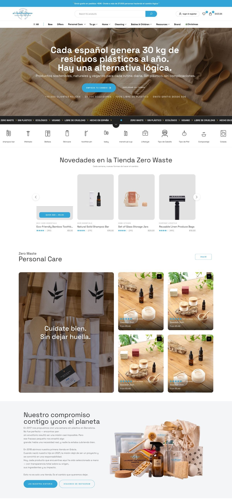

El Cambio Lógico
A sustainability-focused e-commerce website experience built around zero-waste products, clear product discovery, education and a personalized path to getting started.

Web design overview
The experience positions El Cambio Lógico as more than a store: a practical path toward a more sustainable everyday routine. The homepage combines commerce, education, brand story, community proof and a personalized “Where do I start?” journey.
Purpose-led commerce
Make sustainable, natural and vegan everyday products easy to discover and buy.
Education + trust
Explain the brand's zero-waste mission, materials, values and product choices alongside the shopping experience.
Personalized discovery
Help new visitors decide where to start through a short three-question guide.
Problem & opportunity
The source presentation frames the brand around a practical sustainability challenge: people want to make better everyday choices but can face confusion about where to begin. The experience therefore combines product discovery with guidance, education and clear reasons to trust the brand.
Information architecture
The homepage organizes the experience around shopping, learning and brand discovery. Primary navigation includes Home, Cleaning, Babies & Children, Resources and Brand, with product discovery supported by search and category groupings.
UX patterns
Guided onboarding
The “Where do I start?” journey asks three questions about routine, experience level and purchase priority, then prepares a personalized guide.
Quick product actions
Product cards expose category, review count, price and a Quick Add action to support fast browsing.
Proof near the decision
Community reviews, customer counts and sustainability claims appear throughout the shopping journey.
Human support
A visible WhatsApp path gives visitors a direct way to ask questions before buying.
Web design direction
Editorial storytelling
Large statements and image-led sections communicate the brand mission before deeper product exploration.
Category-led discovery
Product categories create clear entry points for different everyday routines.
Purpose woven into commerce
Plastic-free, vegan, cruelty-free and sustainable-material messaging is integrated into the shopping experience rather than isolated in a separate page.
Community validation
Reviews, social proof and founder story reinforce credibility and make the sustainability proposition more tangible.
Final product experience
The supplied homepage presentation shows a long-form responsive e-commerce experience covering navigation, hero messaging, new products, category discovery, brand commitment, personalized guidance, community favorites, sustainability principles, reviews, blog content, brand story, newsletter and footer navigation.
My contribution
This case study is positioned as a web-design project. The supplied presentation documents the website experience, information structure, product discovery, personalized guide, content sections and visual system. It does not provide verified performance metrics, so none are presented as outcomes here.
Live website
The supplied presentation identifies elcambiologico.com as the website and shows its e-commerce homepage experience.
Want to talk through a web design challenge?
Let's connect and explore the users, content structure and experience.